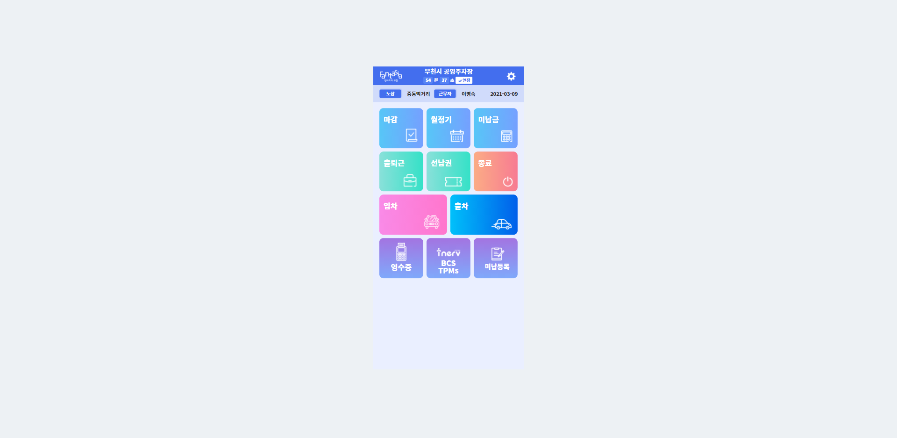

1
2
3
4
5
MY PROJECT
2021
부천 한빛도서관
평택주차포털
2020
양주시설관리공단

부천노상앱
수원주차포털
부천주차포털
한강 통합주차포털
Inerv-manager
High-chart
2019
뉴오리진
강아지왕국(&고양이왕국)
동원몰
빅커피
사진노리
픽스토리
성원부동산
범아
2018
구리시여성노인회관
인천영종역사관
IFEZ
서울열린데이터
2012~2017
정부24
충남지역사회서비스지원단
SKILL